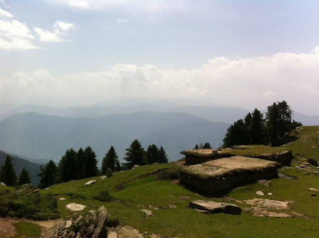

A Mountain In BreswanaBreswana is a remote Himalayan village in Doda district of Jammu and Kashmir in India. The village is located 7,500 feet above sea level. Breswana village is accessed via trails from Premnagar, the closest town. Kashmiri is the main language of the area. People also use Urdu as a secondary language.
LinksWikipedia